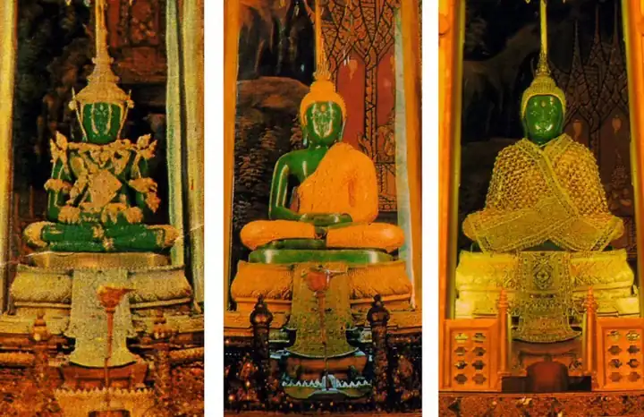
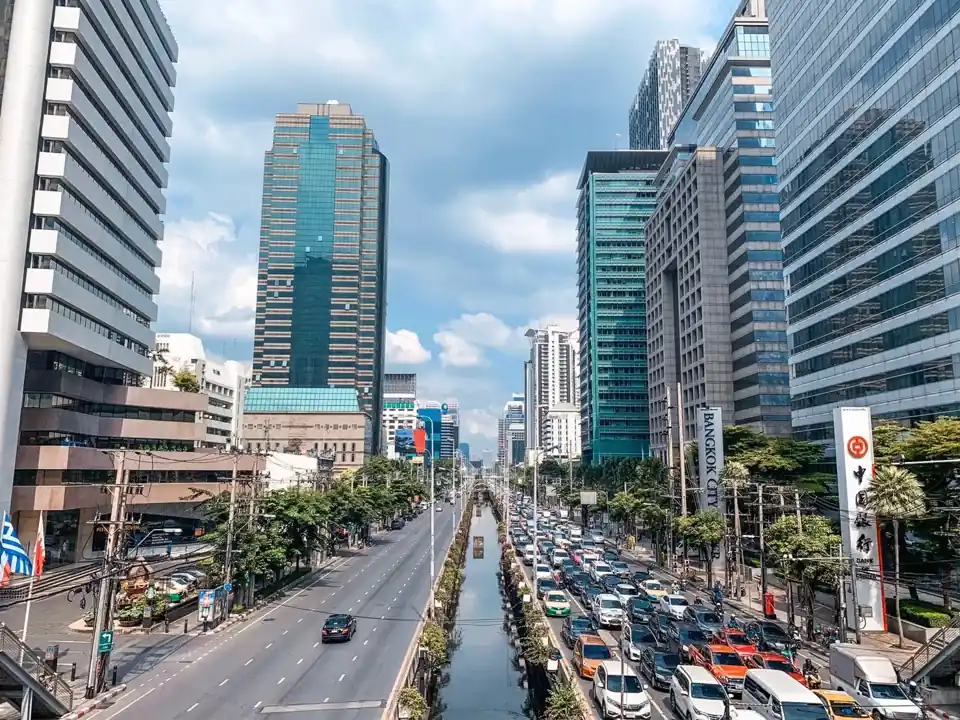
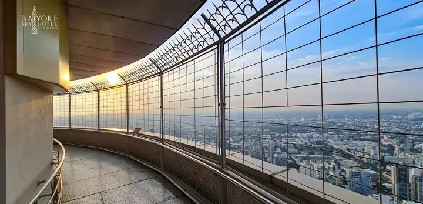
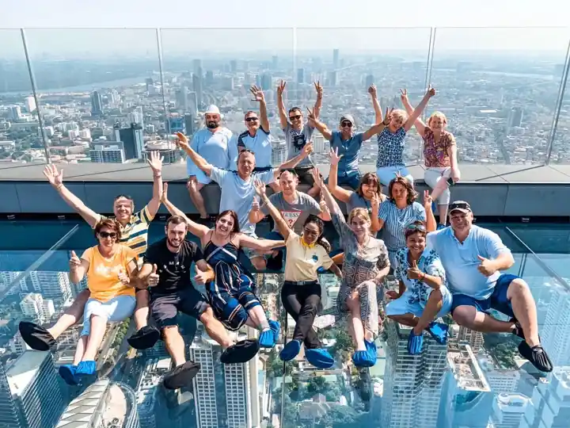
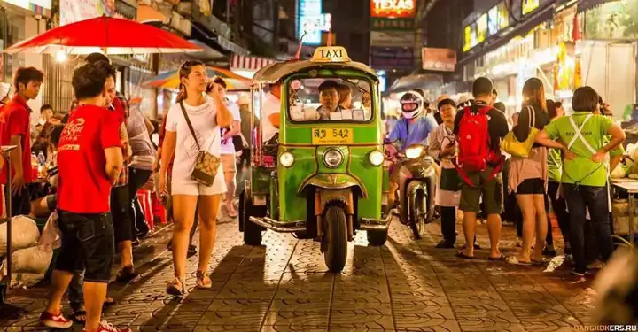
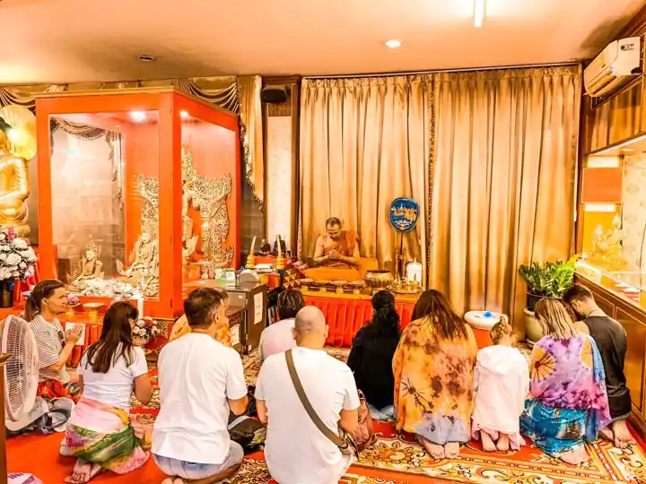
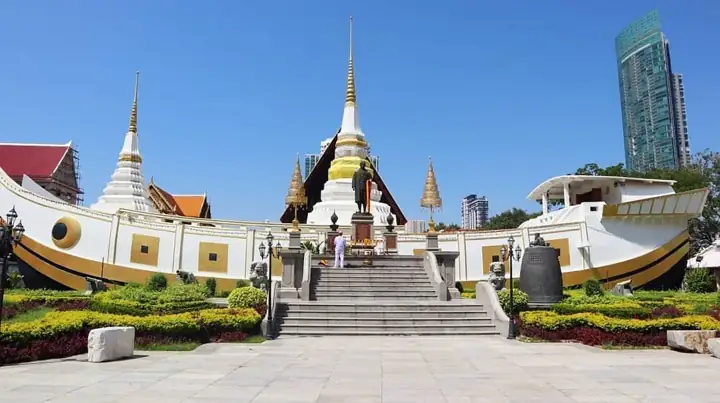

Бангкок
Обзорные, вечерние и тематические экскурсии по Бангкоку: Большой дворец, храмы, речные круизы, высотные площадки и ночные рынки. В категории 17 программ, цены от 1 999 ฿.
Найдено: 17. Цены в батах (฿) за человека; детские цены — для указанного возраста.

БангкокТоп Бангкок
взрослый2 799 ฿
дети 2 299 ฿

БангкокБашня Дракона и Миллион Будд
взрослый2 399 ฿
дети 2 099 ฿

БангкокБольшая Обзорная Экскурсия по Бангкоку
взрослый2 399 ฿
дети 1 899 ฿
Бангкок
Бангкок Вечерний Бриз
взрослый2 499 ฿
дети 2 199 ฿
Бангкок
Бангкок Сансет
взрослый1 999 ฿
дети 1 699 ฿

БангкокКлассический Бангкок NEW
взрослый3 449 ฿
дети 2 999 ฿
Бангкок
Классический Бангкок
взрослый2 799 ฿
дети 2 199 ฿
Бангкок
Обзорная Экскурсия по Бангкоку
взрослый2 099 ฿
дети 1 799 ฿
Бангкок
Мистический Бангкок
взрослый2 799 ฿
дети 1 799 ฿

БангкокБангкок Город Контрастов
от3 000 ฿
дети 2 700 ฿
Бангкок
Вечерний Бангкок
взрослый2 899 ฿
дети 2 399 ฿
 Бангкок
БангкокДевять Чудес Бангкока
взрослый3 649 ฿
дети 3 099 ฿

БангкокУльтрасовременный Бангкок
взрослый3 300 ฿
дети 2 700 ฿
Бангкок
Бангкок Вечерний Контраст
взрослый3 600 ฿
дети 3 100 ฿
Бангкок
Опасный Бангкок
взрослый2 799 ฿
дети 2 799 ฿

БангкокБангкок и Айюттайя
взрослый3 400 ฿
дети 2 800 ฿
Бангкок
Вечерний Бангкок NEW
взрослый2 899 ฿
дети 2 299 ฿
| Экскурсия | Дни | Время | Взрослый | Ребёнок | |
|---|---|---|---|---|---|
| Топ Бангкок Бангкок | Пн, Ср, Пт | 10:00–23:30 | 2 799 ฿ | 2 299 ฿ | |
| Башня Дракона и Миллион Будд Бангкок | Ср, Вс | 08:30–18:30 | 2 399 ฿ | 2 099 ฿ | |
| Большая Обзорная Экскурсия по Бангкоку Бангкок | Ежедневно | 08:30–20:30 | 2 399 ฿ | 1 899 ฿ | |
| Бангкок Вечерний Бриз Бангкок | Пн, Ср, Пт, Вс | 10:30–23:00 | 2 499 ฿ | 2 199 ฿ | |
| Бангкок Сансет Бангкок | Ежедневно | 10:30–23:00 | 1 999 ฿ | 1 699 ฿ | |
| Классический Бангкок NEW Бангкок | Пн, Ср, Пт, Вс | 07:00–20:30 | 3 449 ฿ | 2 999 ฿ | |
| Классический Бангкок Бангкок | Вт, Чт, Сб | 07:00–18:30 | 2 799 ฿ | 2 199 ฿ | |
| Обзорная Экскурсия по Бангкоку Бангкок | Вт, Чт, Сб | 07:30–21:00 | 2 099 ฿ | 1 799 ฿ | |
| Мистический Бангкок Бангкок | Ежедневно | 07:30–22:00 | 2 799 ฿ | 1 799 ฿ | |
| Бангкок Город Контрастов Бангкок | Ежедневно | 06:30–22:00 | 3 000 ฿ | 2 700 ฿ | |
| Вечерний Бангкок Бангкок | Ежедневно | 10:30–23:00 | 2 899 ฿ | 2 399 ฿ | |
| Девять Чудес Бангкока Бангкок | Вт, Чт | 06:30–21:00 | 3 649 ฿ | 3 099 ฿ | |
| Ультрасовременный Бангкок Бангкок | Вт, Ср, Пт, Вс | 10:30–23:30 | 3 300 ฿ | 2 700 ฿ | |
| Бангкок Вечерний Контраст Бангкок | Ежедневно | 10:00–23:30 | 3 600 ฿ | 3 100 ฿ | |
| Опасный Бангкок Бангкок | Пн, Ср, Пт, Вс | 10:30–23:00 | 2 799 ฿ | 2 799 ฿ | |
| Бангкок и Айюттайя Бангкок | Пн, Ср, Сб | 07:00–21:30 | 3 400 ฿ | 2 800 ฿ | |
| Вечерний Бангкок NEW Бангкок | Ежедневно | 09:30–23:30 | 2 899 ฿ | 2 299 ฿ |
Ничего не найдено — попробуйте другой запрос или напишите нам, подберём вручную.